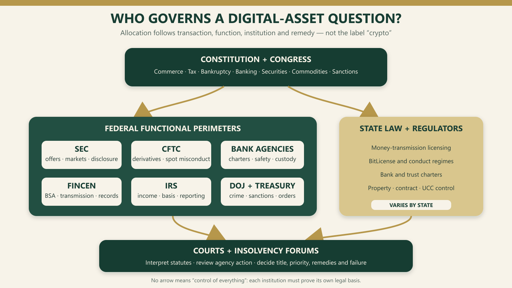

Chapter Eighteen · Part 5
Chapter 18 — The United States: Markets, Enforcement and the Contest for Regulatory Authority
Publication synopsis
Detailed contents
Analytical apparatus
18.1 Constitutional and Federal Structure
18.1.1 Enumerated federal power and state police powers
1
Congress does not possess a general financial police power. Federal digital-asset law rests on enumerated constitutional powers and the statutes enacted under them: regulation of interstate and foreign commerce, taxation, bankruptcy, borrowing and coinage are especially important.1 That architecture explains why the same asset may be reached through separate federal statutes when it is offered as an investment, traded through derivatives, transmitted as value, held by a bank, reported for tax or involved in insolvency. The legal unit is the regulated transaction or function, not the market label “crypto”.
2
States retain general police powers and supply much of the law of property, contract, trusts, corporations, commercial transfers and money transmission. Federal law may pre-empt a state rule, but pre-emption must be established from the Constitution or the relevant Act; it is not inferred merely because a federal agency is active.2 The strongest account of the United States system is therefore layered rather than hierarchical. Its advantage is functional specialisation. Its cost is that a firm may comply with one public-law perimeter while remaining exposed under another or under state private law.
3
For Pakistan, the comparative lesson is not to create an American-style multiplicity of regulators. It is to identify, for every digital-asset consequence, the constitutional competence, enabling statute, decision-maker and route of review. A single statutory label should not silently decide securities treatment, taxation, ownership, exchange control and insolvency priority.
18.1.2 Courts, agencies and separation of powers
4
Congress enacts the governing rule; agencies administer delegated authority; courts determine contested meaning and legality. That elementary separation matters because American crypto policy has often been announced through enforcement complaints, staff statements, speeches, interpretive releases and proposed rules. Those instruments do not have equal legal force. Final rules must remain within statutory authority and satisfy administrative-law requirements, while courts review agency action and independently resolve statutory meaning.3
5
The SEC's March 2026 interpretive release is a consequential institutional statement. It classifies crypto assets into categories, explains when a non-security asset may be involved in an investment contract and addresses protocol activities. It is effective agency interpretation, not an Act of Congress, a judicial holding or a licence.4 The counter-position is practical: market participants need usable guidance before the last appeal is decided. Yet guidance becomes misleading if its current policy is reported as immutable law.
6
Pakistan should publish a comparable hierarchy of sources. Acts, notified rules, binding directions, adjudications, guidance and consultation papers should be visibly differentiated. A regulator may explain how it expects to administer an Act, but the publication must state whether that explanation creates a duty, announces a discretion or merely offers a safe route to compliance.
18.2 Federal and State Allocation
18.2.1 Federal financial law
7
Federal authority is dispersed by legislative purpose. The SEC administers federal securities statutes; the CFTC administers the Commodity Exchange Act; federal banking agencies supervise chartered institutions; FinCEN administers the Bank Secrecy Act framework; the IRS applies federal tax law; the Department of Justice prosecutes federal crimes; and the Treasury's sanctions authorities can restrict transactions or property interests. Each body must identify the regulated person, statutory trigger, prohibited conduct and available remedy.5
8
Overlap is real but should not be overstated. A crypto asset can be a commodity for Commodity Exchange Act purposes while a particular capital-raising transaction involving it is an investment contract. The same receipt can be taxable property, and the customer's entitlement can remain a question of state law. These descriptions are cumulative because they answer different legal questions. The system is most coherent when agencies coordinate facts and timing without pretending that one classification exhausts all others.
9
Pakistan can adopt that discipline even within a more integrated framework. Its coordination instrument should be a competence map: who licenses an activity, who supervises prudential risk, who investigates misconduct, who decides proprietary disputes and who leads during failure. Coordination cannot cure a missing statutory power, and multiple memoranda cannot substitute for a rule addressed to the regulated person.
18.2.2 State money-transmission, trust and digital-asset statutes
10
States license money transmitters, charter trust companies and define commercial-law effects. The Uniform Law Commission's 2022 amendments added Article 12 for “controllable electronic records” and connected control rules across the Uniform Commercial Code.6 The amendments are model law, not federal law: legal effect depends on enactment and the state's effective-date and transition provisions. New York, for example, now has an enacted Article 12, while its financial regulator separately applies the BitLicense regime to specified virtual-currency business activity.7
11
State regimes can be substantively different. One may emphasise intensive conduct licensing, another bank or trust charters, and another commercial-law control. A charter does not answer every question about segregation, fiduciary capacity or federal permission. The counter-position favours state experimentation: local regimes can test custody and corporate designs sooner than Congress. The objection is cumulative cost and inconsistent definitions for firms operating nationally.
12
Pakistan should separate authorisation from property law in the same way. A provider licence demonstrates permission and continuing supervision; it should not, without express words, determine whether customer assets are trust property, whether a transferee takes free of an adverse claim or how insolvency priority operates.

| Authority | Primary trigger | Core instrument or function | Important limit | Status at 2026-08-28 |
|---|---|---|---|---|
| Congress | Enumerated constitutional power | Enacts financial tax bankruptcy and sanctions statutes | Cannot confer authority by proposal alone | Operative statutes plus pending market-structure bill |
| SEC | Security or securities-market activity | Securities Acts registration disclosure and market infrastructure | Asset label alone is not the transaction analysis | Operative statutes plus 2026 interpretation and proposed rule |
| CFTC | Commodity derivatives or specified spot misconduct | Commodity Exchange Act and 17 CFR part 180 | No comprehensive licence for every spot venue under current law | Operative; proposed expansion not enacted |
| Federal banking agencies | Chartered institution or statutory payment-stablecoin role | Charter powers prudential law custody and supervision | Permission remains subject to safety soundness and applicable law | Operative plus pending GENIUS implementation |
| FinCEN and Treasury | Money transmission BSA or sanctions nexus | Registration AML reporting and lawful-order controls | Does not itself supply state licence or title | Operative |
| IRS | Federal taxable event and information-reporting nexus | Property treatment basis income and broker reporting | Tax classification does not decide securities status or ownership | Operative with phased reporting |
| States | Local virtual-currency activity charter property or commercial-law nexus | Money transmission BitLicense trust law UCC Article 12 | Permission may not passport nationally or pre-empt federal law | Varies by state and effective date |
| Courts | Case or controversy and statutory jurisdiction | Interpret statutes review agency action and decide private-law claims | Decision binds according to court hierarchy and issue actually decided | Operative |
18.3 Securities Law and the Investment-Contract Inquiry
18.3.1 Howey and transaction-specific analysis
13
The Securities Act regulates offers and sales of securities, including an “investment contract”. In SEC v WJ Howey Co, the Supreme Court asked whether the scheme involved an investment of money in a common enterprise with an expectation of profits to be derived from the efforts of others.8 The doctrine is deliberately functional. Code, a network unit or a contractual receipt is not permanently transformed into a security merely by nomenclature; the question is whether the transaction and continuing economic relationship possess the statutory character.
14
That flexibility is the doctrine's strength and its principal criticism. It prevents promoters from avoiding investor-protection law through new forms, but it may make the legal answer depend on evidence about marketing, managerial undertakings, purchaser expectations and network maturity. Reves v Ernst & Young reinforces the broader methodological point: statutory categories are applied through their own tests and presumptions, not through a universal intuition that an instrument is financially innovative.9
15
Pakistan should resist importing Howey as a four-word formula. If its securities statute or virtual-assets law uses different definitions, the domestic test must begin there. The portable insight is evidential: identify the promise, investor dependence, information asymmetry and person responsible for performance before assigning a disclosure consequence.
18.3.2 Tokens, schemes, disclosure and secondary markets
16
Federal cases demonstrate transaction-specificity. Telegram treated the agreements and planned distribution as an integrated scheme and granted relief against an unregistered offering.10 Ripple distinguished institutional sales from programmatic sales on the record before the district court; a later final judgment imposed a civil penalty and injunction, and the parties dismissed their cross-appeals in August 2025, leaving the final judgment in place.11 Neither case establishes that every unit or every secondary-market transfer is always a securities transaction.
17
The 2026 SEC interpretation makes the same asset/transaction distinction more explicit and states the Commission's present taxonomy. A proposed August 2026 “Regulation Crypto Assets” would add exemptions and a conditional safe harbour, but it was a proposal at the cut-off, not a final rule.12 The counter-position warns that regulatory repositioning can reduce settled investor protections; the answer is disciplined status reporting and retention of fraud, disclosure and registration tools where the statute reaches the transaction.
18
For Pakistan, classification should produce a consequence rather than a slogan. Where a token sale finances a promoter and purchasers depend on disclosed managerial work, the law should identify the offering obligation, liable persons, continuing disclosure and treatment of later trades. Where those elements are absent, consumer, payment or market-conduct rules may still apply without forcing the transaction into securities law.
18.4 Commodities, Derivatives and CFTC Authority
18.4.1 Commodity character and derivatives jurisdiction
19
The Commodity Exchange Act defines “commodity” broadly, and federal courts have accepted that virtual currencies can fall within that definition. In CFTC v McDonnell, the court held that virtual currencies may be regulated as commodities and rejected the proposition that another agency's possible authority displaced the CFTC's statutory role.13 The CFTC's comprehensive market-regulatory jurisdiction is clearest for futures, options and swaps and for registered intermediaries and infrastructures.
20
Commodity character does less work than popular accounts imply. It does not make every cash-market venue a designated contract market, immunise an investment-contract offering from securities law or determine title. The positive case for CFTC leadership stresses derivatives expertise and market surveillance. The counter-position asks whether extending that model to spot digital commodities without matching retail, custody and disclosure architecture would create a new gap.
21
Pakistan should similarly distinguish an underlying asset from the contract written on it. A leveraged retail product, perpetual derivative, spot exchange and custody account present different risks and may require different permissions even if they reference the same digital asset.
18.4.2 Spot-market limits and anti-fraud authority
22
In spot markets, the CFTC has historically relied on statutory anti-fraud and anti-manipulation powers and on special provisions for leveraged retail commodity transactions rather than a complete federal licensing code for every cash venue.14 This produces an enforcement perimeter without equivalent day-to-day supervision of all platforms. State money-transmission law, securities law where applicable and general criminal or consumer law may fill parts of the space.
23
The Digital Asset Market Clarity Act would materially alter the allocation. The House passed HR 3633 in July 2025; the Senate Banking Committee advanced market-structure legislation in May 2026, and updated text was released in July. A cloture process was scheduled for September 2026. At the 28 August cut-off, however, no final Act had been enacted.15 Describing the proposed structure as existing CFTC jurisdiction would therefore be wrong.
24
Pakistan's statute should avoid a comparable supervisory void. If a class of spot assets is outside securities law, the Act should still assign market integrity, custody, listing, conflicts, recordkeeping and failure management to a named authority. Anti-fraud power alone is not a substitute for an operating rulebook.
18.5 Banking, Payments and Money Transmission
18.5.1 Federal banking agencies and payment law
25
Banks operate through charter powers and prudential supervision. The OCC's Interpretive Letter 1184 confirms that national banks and federal savings associations may provide crypto-asset custody and execution services, including by using permissible third parties, provided the activity is conducted safely and soundly and in compliance with applicable law.16 Permission therefore begins, rather than ends, the supervisory inquiry: key management, operational resilience, capital, liquidity, consumer terms, third-party risk and auditability remain material.
26
In July 2025 the Federal Reserve, FDIC and OCC jointly described risk-management considerations for crypto-asset safekeeping and expressly stated that the joint statement created no new supervisory expectations.17 That status sentence is important. Supervisory communication can clarify application of existing principles without purporting to legislate. The counter-position is that bank participation can provide stronger controls; the caution is that a banking label should not imply deposit insurance or eliminate technological and legal risk.
27
Pakistan should define the interface between a virtual-asset licence and banking permission. A bank, payment institution and non-bank custodian should not be treated as interchangeable, and outsourcing should not transfer the licensed entity's responsibility for records, reconciliation or customer return.
18.5.2 State licensing and stable-value activity
28
FinCEN's 2013 guidance applies the Bank Secrecy Act framework by activity: a user of convertible virtual currency is not an MSB merely as user, while an administrator or exchanger can be a money transmitter unless an exemption applies.18 Separately, state law may require money-transmitter or virtual-currency authorisation. New York's Part 200 identifies transmission, custody, customer dealing, exchange and control or issuance as licensable virtual-currency business activities, while exempting specified personal and merchant use.19
29
The federal and state layers address different objects. FinCEN registration and anti-money-laundering duties do not supply a state licence; a BitLicense does not determine federal securities status; a trust charter may add fiduciary powers that an activity licence lacks. The price of this functional precision is a difficult nationwide licensing map.
30
Pakistan can obtain the benefit without fifty licensing systems. Its application and supervisory forms should identify each function actually performed—exchange, transfer, custody, brokerage, issuance, payment processing and staking—then attach conditions to that function. A generic VASP badge should not conceal materially different customer and prudential risks.
18.6 Stablecoins and Dollar-Based Digital Finance
18.6.1 Reserve, redemption and issuer structure
31
The GENIUS Act became Public Law 119-27 on 18 July 2025. It creates a federal and state pathway for permitted payment-stablecoin issuers, restricts issuance by unpermitted persons and establishes supervision, enforcement and foreign-issuer provisions.20 Section 4 requires identifiable reserves of at least one-to-one in specified liquid assets, a public redemption policy, monthly reserve composition disclosure and limits on rehypothecation.21 The Act also gives payment-stablecoin holders defined reserve and insolvency protections.
32
Enactment does not mean immediate full operation. The Act takes effect on the earlier of eighteen months after enactment or 120 days after the primary federal regulators issue final implementing regulations. The OCC and other agencies were still conducting proposed rulemakings in 2026; on 19 August the Comptroller said an OCC final rule was expected in November. At the cut-off, the principal implementation package remained pending.22
33
The regime's attraction is clear: reserve quality, redemption, disclosure, supervision and failure treatment are designed together. Its limit is equally important for Pakistan: statutory backing is not equivalent to a sovereign guarantee, and the Act expressly rejects federal deposit or share insurance for payment stablecoins.23
18.6.2 Dollar influence, payment innovation and systemic questions
34
Payment stablecoins can extend dollar-denominated settlement across borders and outside conventional banking hours. Their usefulness depends on reliable par redemption, reserve liquidity, distribution channels and integration with banks and payment infrastructures. Federal Reserve analysis identifies possible efficiency benefits while also showing how adoption can change funding flows and monetary-policy implementation.24
35
The counter-position focuses on runs, reserve concentration, operational failure, illicit finance and migration away from insured deposits. A legal one-to-one reserve rule reduces but does not abolish liquidity, custody and confidence risk. The GENIUS Act's federal/state allocation and foreign reciprocity provisions also make stablecoins instruments of regulatory and dollar influence, not merely private software.
36
Pakistan should analyse any rupee- or dollar-linked token as a claim and payment arrangement. Approval should state the redemption obligor, permitted reserves, custody location, audit frequency, treatment of income, fees, technology for lawful orders and insolvency route. Monetary and exchange-control consequences cannot be left to the asset's marketing name.
| Design question | GENIUS Act answer | Status or limit | Pakistan-facing test |
|---|---|---|---|
| Who may issue | Permitted federal or state qualified payment-stablecoin issuer | Enacted architecture; implementation/effective date pending | Name the issuer and regulator and prohibit unqualified issuance |
| Reserve backing | At least one-to-one identifiable reserves in specified liquid assets | Reserve quality does not equal sovereign guarantee | Specify assets custody valuation concentration and audit |
| Redemption | Public policy and clear timely redemption procedures | Operational liquidity and lawful restrictions still matter | State obligor timing fees suspension and complaint route |
| Reuse of reserves | Rehypothecation generally restricted with bounded exceptions | Exceptions and supervisory approval require control | Prohibit hidden reuse and require traceable exceptions |
| Supervision | Federal regulator plus certified state pathways | Allocation depends on issuer type and size | Assign prudential and conduct roles without overlap |
| Customer failure protection | Priority in required reserves and tailored insolvency provisions | Shortfall and implementation risk remain | Legislate segregation priority shortfall and return process |
| Cross-border access | Foreign issuer and reciprocity provisions | Requires US nexus and comparable oversight | Require local nexus records redress and regulator cooperation |
| Public backing | No full-faith-and-credit or deposit/share insurance | Marketing must not imply a government guarantee | Use mandatory non-guarantee disclosure and enforcement |
18.7 Taxation and Treatment as Property
18.7.1 Federal tax classification and reporting
37
IRS Notice 2014-21 treats convertible virtual currency as property for federal income-tax purposes, so general tax principles for property transactions apply.25 Receipt, exchange and disposal can produce ordinary income, gain or loss depending on the taxpayer and activity. The answer requires fair market value, basis, holding period and character. Tax classification does not settle whether the same transaction involves a security or commodity or who owns an asset held through an intermediary.
38
Property treatment provides conceptual continuity but creates recordkeeping burdens where digital assets are used for frequent small payments. Every disposal can require basis matching and valuation. Reporting rules can improve information, yet they do not reconstruct missing wallet histories or determine beneficial ownership. The counter-position therefore favours targeted de minimis relief; any such relief must come from law, not taxpayer assumption.
39
Pakistan should decide tax consequences expressly and coordinate them with withholding and information reporting. A virtual-asset statute should not declare “property” and assume that income character, timing, valuation, source and loss recognition follow automatically.
18.7.2 Basis, disposal, mining, staking and intermediaries
40
The IRS treats staking rewards as gross income when a cash-method taxpayer obtains dominion and control over the rewarded units. Revenue Ruling 2023-14 applies that timing principle whether staking occurs directly or through an exchange on its stated facts.26 Mining, airdrops, hard forks and lending arrangements require their own factual analysis; the word “reward” does not determine character.
41
Broker reporting now uses Form 1099-DA for relevant digital-asset proceeds. Current IRS guidance distinguishes custodial brokers covered by final regulations and notes that the final rules do not include non-custodial brokers; basis reporting phases in for certain transactions beginning in 2026.27 A form is an information mechanism, not conclusive proof of tax liability or title.
42
Pakistan should align provider records with taxpayer obligations before mass retail use. Required fields should include timestamps, asset identifiers, quantity, fiat value, fees, wallet or account, transaction type and counterparty category. Otherwise tax law will impose nominal duties that neither taxpayers nor the administration can reliably calculate.
18.8 Insolvency, Custody and Customer Assets
18.8.1 Bankruptcy estates and customer claims
43
Section 541 of the Bankruptcy Code generally includes the debtor's legal and equitable interests in the estate, while subsection (d) limits the estate where the debtor holds only legal title and not the equitable interest.28 For platform customers, the decisive questions include governing law, the custody contract, segregation, control, tracing, authority to reuse assets and whether the relationship is proprietary or merely debtor–creditor. An on-screen balance and an omnibus address do not decide those questions.
44
The GENIUS Act addresses failure more directly for permitted payment-stablecoin issuers. It gives holder claims priority with respect to required reserves, modifies the automatic-stay and estate rules for redemption and provides for regulatory participation in insolvency.29 Those tailored provisions illustrate why general customer language is insufficient when assets are designed as money-like claims.
45
Pakistan should legislate the failure path before licensing mass custody: exclusion or priority of customer assets, treatment of shortfalls, administrator powers, stays, set-off, tracing, sub-custodian failure and the order of return. Disclosure of insolvency risk cannot substitute for a legal allocation.
18.8.2 Segregation, control and intermediary failure
46
Customer-asset protection requires alignment between law and operations. The provider must maintain identifiable entitlements, segregated or otherwise protected accounts, daily reconciliation, limits on lending and rehypothecation, sub-custodian oversight, resilient key recovery and records usable by an insolvency officeholder. Proof-of-reserves can evidence selected assets but, without verified liabilities and legal ownership, cannot establish solvency or customer priority.
47
The 2022 UCC amendments offer a commercial-law vocabulary of control for controllable electronic records and rules for qualifying purchasers.30 They do not automatically create a trust, supervise a custodian or resolve every conflict-of-laws issue. The counter-position values transferable, technology-neutral control rules; the caution is that technical control and beneficial entitlement can diverge.
48
Pakistan's custody rules should therefore require a legal architecture diagram as well as a cybersecurity policy. The application should show title, private-key control, books and records, customer terms, sub-custody, permitted use and the return path for ordinary withdrawal and failure.
18.9 Judicial Decisions and Enforcement-Led Development
18.9.1 SEC, CFTC, DOJ and state actions
49
American digital-asset doctrine developed through enforcement as well as rulemaking. SEC registration cases, CFTC fraud and manipulation actions, DOJ prosecutions, FinCEN and sanctions measures, and state actions operate under different statutes, burdens and remedies. A fraud conviction proves neither that every token is a security nor that a platform held customer property on trust. Each disposition must be read for the legal question actually decided.
50
The SEC's February 2025 dismissal of its Coinbase action illustrates enforcement discretion. The Commission said the dismissal was intended to facilitate regulatory reform and did not rest on an assessment of the merits or state its position on other cases.31 DOJ's April 2025 memorandum likewise redirected digital-asset prosecutions toward fraud and use of digital assets in underlying crime, while stating that DOJ is not a digital-asset regulator.32
51
Supporters view these changes as correction of regulation by enforcement. Critics argue that abrupt withdrawal can produce regulatory whiplash and weaken deterrence. Pakistan should avoid making major perimeter changes through case selection alone: publish reasons, preserve pending adjudicative fairness and state what substantive law remains unchanged.
18.9.2 What litigation clarified and what remains contested
52
Litigation established that technical form does not immunise economic conduct and that promises, custody, solicitation, manipulation and false statements remain legally cognisable. Howey, Telegram, Ripple and McDonnell clarified distinct questions, but none supplies a complete crypto code. Secondary transactions, protocol governance, the end of an investment-contract relationship and federal/state boundaries remain fact- and statute-sensitive.
53
The 2026 SEC interpretation reduces uncertainty by stating a taxonomy and describing protocol mining, staking, airdrops and wrapping. Yet an interpretive release cannot enact the market-structure allocation contained in pending congressional proposals. Courts also remain able to reject an agency construction in a litigated case.33
54
Pakistan can improve legitimacy by separating investigation, interim protection, administrative decision and appeal. Published decisions should set out facts, statutory elements, evidence, reasons, remedy and review. That discipline produces doctrine without making every licence-holder infer the law from a press release.
18.10 DeFi, Tokenisation and Market Structure
18.10.1 Protocol functions and intermediaries
55
“DeFi” should be decomposed into functions: software publication, interface operation, custody, order routing, governance, oracle provision, administration, validation, fee extraction and emergency control. Legal responsibility depends on statutory definitions and facts showing who performs or controls a regulated activity. Calling a system autonomous neither proves the absence of persons nor justifies treating every software contributor as a financial intermediary.
56
The 2026 SEC interpretation treats certain protocol activities as part of its taxonomy and transaction analysis, while the Commission's August proposal would create conditional pathways for some crypto-market activity.34 The case for tailored rules is that conventional registration may assume an issuer or intermediary that does not exist in the same form. The counter-position is that “decentralised” can become a label used to conceal governance, fees or upgrade power.
57
Pakistan should use control and function as evidential questions, not automatic statutory conclusions. A published protocol assessment should identify access points, custody, upgrade keys, governance concentration, economic beneficiaries, representations and the practical capacity to comply with lawful orders.
18.10.2 Digital securities, exchanges and clearing
58
Tokenisation changes records and settlement mechanics, not the need to identify the underlying right. A tokenised share, bond or fund interest remains subject to issuer, disclosure and market-infrastructure law where its legal characteristics so require. Trading venues, broker-dealers, clearing agencies, transfer agents and custodians must determine whether registration or an exemption applies under the federal securities statutes.35
59
Distributed settlement may shorten reconciliation chains and support programmable corporate actions. It can also create new dependencies on smart contracts, oracles, key management and interoperability between the authoritative legal register and the ledger. The crucial question is which record prevails when code, the issuer's register and a court order diverge.
60
Pakistan should require a tokenisation instrument to identify the underlying asset, issuer, authoritative register, transfer rule, finality point, corporate-action method, custody model and remedy for erroneous or unauthorised transfers. Technology-neutrality is not legal incompleteness.
18.11 Executive Policy and Legislative Change
18.11.1 Executive orders, agency coordination and policy reversal
61
Executive Order 14178 of 23 January 2025 made support for lawful digital-asset activity, self-custody and dollar-backed stablecoins administration policy, created a working group, prohibited agencies from pursuing a United States central-bank digital currency within the order's terms and revoked the prior executive order.36 The order can direct executive coordination and priorities; it cannot amend the Securities Act, Commodity Exchange Act or Bankruptcy Code.
62
Administrative change can nevertheless reshape enforcement, bank supervision and rulemaking quickly. That agility allows correction of obsolete policy. Its countervailing risk is reliance on speeches and reversals that outpace formal law. The enduring legal record must therefore distinguish executive policy, final agency action, pending proposal and judgment.
63
Pakistan should place major market permissions and customer protections in statute or properly made rules. Executive coordination is useful for implementation, but a sector should not depend on an informal tolerance that can be withdrawn without transition, reasons or review.
18.11.2 Congressional proposals and enacted change
64
The legislative picture at the cut-off contains three distinct statuses. The GENIUS Act is enacted public law but its principal effective date and final-rule implementation remain pending. The CLARITY market-structure project has progressed through the House and Senate committee process but is not enacted. The SEC's Regulation Crypto Assets instrument is a proposed rule.37 These differences are legal, not editorial.
65
Proposals still matter: they guide investment, agency preparation and political negotiation. But comparison becomes unsound when likely direction is treated as present competence. A future Act may also alter the balance between SEC, CFTC and state authority in text different from any committee draft.
66
Pakistan should maintain a public change register that separates enacted provisions, commencement, delegated legislation, consultation, litigation and implementation guidance. That register is a practical anti-error device for both officials and market participants.
18.12 State Innovation and Regulatory Fragmentation
18.12.1 New York, Wyoming and other models
67
New York's Part 200 is an activity-based licensing regime backed by supervision, examinations, capital or bonding, compliance and coin-listing controls. A New York limited-purpose trust charter can carry fiduciary powers and money-transmission consequences that a BitLicense alone does not.38 Wyoming has used commercial, custody and special-purpose depository legislation, including a 100 per cent liquid-asset requirement for special-purpose depository institutions and express notice where deposits are not federally insured.39
68
These models embody different regulatory theories. New York privileges intensive gatekeeping and conduct oversight; Wyoming privileges charter and commercial-law innovation. Neither badge is self-proving. The legal incidents, federal interfaces and actual supervisory capacity must be read.
69
Pakistan can use regulatory pilots, but the pilot should identify who bears customer loss, which rules are disapplied, the data to be collected, the exit mechanism and the test for permanent adoption. “Sandbox” should not become a status that obscures legal responsibility.
18.12.2 Competition, inconsistency and passporting limits
70
State competition can reveal workable models and check federal over-centralisation. It can also multiply applications, examinations, fees and inconsistent definitions. A permission granted by one state does not automatically passport every activity nationwide, and federal requirements remain applicable according to their own terms.
71
The United States can absorb part of that cost because of its market scale, legal services and mature judicial system. Pakistan's institutions and constitutional allocation are different. Replicating federal-state contest without comparable capacity would likely create delay and forum shopping rather than useful experimentation.
72
The transferable design is supervised variation inside a common floor. Provincial or sectoral innovation, if constitutionally available, should operate under shared customer-asset, AML, disclosure, cybersecurity and failure rules, with an express mechanism for recognition and escalation.
18.13 The United States' Global Market Influence
18.13.1 Dollar, capital markets, technology and enforcement reach
73
The depth of United States capital markets, the dollar's international role, major technology firms and dollar-backed tokens amplify American decisions. Access to banking, securities markets, Treasury collateral and dollar settlement can make United States compliance commercially decisive outside the territory. The GENIUS Act's foreign-issuer and reciprocity provisions deliberately connect domestic access with comparable supervision and lawful-order capability.40
74
This influence is partly legal and partly economic. A platform may change global conduct because excluding United States customers is costly even where a rule has no universal legal force. Treating commercial pressure as universal jurisdiction obscures the statute and weakens conflict-of-laws analysis.
75
Pakistan should identify the specific dependency—correspondent banking, dollar clearing, customers, securities offering, hosting or contractual choice of law—before designing a response. Diversification and cooperation are different tools and should not be collapsed into a rhetorical claim of sovereignty.
18.13.2 Extraterritorial effects on platforms and states
76
United States law reaches foreign actors only through the relevant statutory and jurisdictional basis. Federal securities law, for example, has its own territorial rule; Morrison v National Australia Bank rejected an unbounded effects test and focused the statutory inquiry on domestic transactions and listed securities.41 Sanctions, criminal, banking and stablecoin statutes have different triggers. Each must be proved.
77
The GENIUS Act expressly addresses offers to persons in the United States, foreign issuers, lawful-order capability and reciprocal arrangements. Those provisions are not a general licence to regulate every overseas stablecoin transaction.42 The counter-position stresses the need to prevent evasion; the rule-of-law answer is precise nexus, notice, cooperation and review.
78
Pakistan should require foreign providers to identify local customers, responsible legal entity, local records, complaint route, governing law, regulator access and exit arrangements. It should also preserve safeguards for cross-border information sharing and conflicts between lawful orders.
18.14 Lessons and Limits for Pakistan
18.14.1 Transferable institutional insights
79
Five techniques are transferable. First, classification should be purpose-specific: securities, payments, tax and property answers may coexist. Second, every regulator should identify statutory competence and a route of challenge. Third, customer-asset rules must extend through sub-custody and failure. Fourth, agency materials and bills require explicit status labels. Fifth, enforcement decisions should publish facts, legal elements, evidence and reasons.
80
The American experience also supports a functional authorisation schedule. Exchange, brokerage, custody, transfer, issuance, payment processing, staking and market operation should be separately declared even where one licence covers several functions. This makes capital, conduct, technology and recovery conditions intelligible.
81
The counter-position is that detailed functional schedules can become obsolete. The answer is an outcome-based core plus a reviewable classification process. Pakistan need not list every technology, but it should state who decides a new activity's perimeter, on what evidence and with what interim protections.
18.14.2 Features that cannot be copied without constitutional and market fit
82
Pakistan should not reproduce overlapping federal agencies and fifty-state licensing or treat Howey as a free-standing constitutional principle. Nor can it assume the market power created by the dollar, Treasury reserves and United States capital markets. Domestic design must begin with Pakistan's Constitution, the Virtual Assets Act 2026, duly notified PVARA instruments, banking and securities statutes, exchange-control law and actual institutional capacity.
83
The central choice is between importing American conclusions and importing disciplines. Conclusions often depend on statutory language and federal history Pakistan does not share. Transaction-specific analysis, evidence before coercion, reasoned review, separate customer assets and candour about non-operative proposals are much more portable.
| United States technique | Value | Dependency | Recommendation for Pakistan | Do not copy |
|---|---|---|---|---|
| Transaction-specific classification | Avoids one label deciding all consequences | Clear statutory purposes and evidence | Adopt purpose-specific tests and a reasoned perimeter process | Howey as a free-standing slogan |
| Competence map | Makes regulator and remedy visible | Enabling statutes and review | Publish function-by-function responsibility and escalation | Federal agency contests without statutory need |
| Customer-asset architecture | Protects through custody and failure | Property insolvency and operational alignment | Legislate title segregation reconciliation reuse and return | Disclosure-only protection |
| Status-controlled rulemaking | Separates law guidance and policy | Public register and commencement discipline | Maintain an enacted/effective/proposed/judicial change register | Press releases as operative law |
| Functional licences | Matches conditions to actual activity | Application data and supervision | Declare exchange custody transfer brokerage issuance and staking functions | Generic VASP badges that conceal risk |
| Judicially reviewable enforcement | Builds legitimate doctrine | Reasons evidence and accessible appeal | Publish facts elements reasons remedy and review route | Regulation solely through case selection |
| State experimentation | Can test new models | Large market federalism and institutional capacity | Use bounded pilots under a common national protection floor | Fifty-state licensing fragmentation |
| Dollar-based influence | Extends reach and liquidity | Dollar settlement Treasury markets and scale | Analyse specific payment and foreign-provider dependencies | Assumption that Pakistan has equivalent extraterritorial leverage |
Conclusion
84
The United States demonstrates both the adaptability and cost of layered financial law. Existing doctrines can reach new arrangements, while divided authority can make legal consequences depend on a demanding chain of classification. The 2025–26 reforms improve the stablecoin architecture and the SEC's stated taxonomy, but they do not create one regulator or eliminate private law, state law and judicial control.
85
The chapter's standalone contribution is a controlled allocation method. Ask which transaction or function is in issue; identify the source, competent institution and legal status; separate authorisation from ownership; then test failure, review and cross-border effect. Applied in Pakistan, that method supports coherent regulation without copying American fragmentation.
Selected Authorities
86
Constitution and statutes: US Constitution art I § 8; Securities Act of 1933; Securities Exchange Act of 1934; Commodity Exchange Act; Bank Secrecy Act; Bankruptcy Code; GENIUS Act, Pub L No 119-27, 139 Stat 419 (2025).
87
Cases: SEC v WJ Howey Co 328 US 293 (1946); Reves v Ernst & Young 494 US 56 (1990); SEC v Telegram Group Inc 448 F Supp 3d 352 (SDNY 2020); SEC v Ripple Labs Inc 682 F Supp 3d 308 (SDNY 2023); CFTC v McDonnell 287 F Supp 3d 213 (EDNY 2018); Morrison v National Australia Bank Ltd 561 US 247 (2010).
88
Administrative and model-law materials: SEC Release Nos 33-11412 and 34-105020 (17 March 2026); OCC Interpretive Letter 1184 (7 May 2025); FinCEN Guidance FIN-2013-G001 (18 March 2013); IRS Notice 2014-21 and Revenue Ruling 2023-14; Uniform Commercial Code Amendments (2022).
89
This chapter is designed for independent comparative use. Its conclusions do not depend on adoption of United States classifications in Pakistan. Legislative and rulemaking status should be refreshed from primary sources after 28 August 2026.
Footnotes
- ↑ US Constitution art I § 8 cls 1, 3, 4 and 5; Library of Congress, ‘Constitution Annotated: Article I, Section 8’ <https://constitution.congress.gov/browse/article-1/section-8/> accessed 28 August 2026.
- ↑ US Constitution art VI cl 2; Arizona v United States 567 US 387, 399–400 (2012).
- ↑ Administrative Procedure Act, 5 USC §§ 553, 706; Loper Bright Enterprises v Raimondo 603 US 369 (2024).
- ↑ SEC, ‘Application of the Federal Securities Laws to Certain Types of Crypto Assets and Certain Transactions Involving Crypto Assets’ Securities Act Release No 11412, Exchange Act Release No 105020 (17 March 2026), 91 FR 13714, effective 23 March 2026 <https://www.sec.gov/rules-regulations/2026/03/s7-2026-09> accessed 28 August 2026.
- ↑ Securities Act of 1933, 15 USC § 77a et seq; Securities Exchange Act of 1934, 15 USC § 78a et seq; Commodity Exchange Act, 7 USC § 1 et seq; Bank Secrecy Act, 31 USC § 5311 et seq.
- ↑ Uniform Law Commission, Uniform Commercial Code Amendments (2022), art 12 and conforming amendments <https://www.uniformlaws.org/viewdocument/final-act-164> accessed 28 August 2026.
- ↑ New York Uniform Commercial Code art 12 (current 5 June 2026) <https://www.nysenate.gov/legislation/laws/UCC/A12> accessed 28 August 2026; New York State Department of Financial Services, ‘Virtual Currency Business Licensing’ <https://www.dfs.ny.gov/virtual_currency_businesses> accessed 28 August 2026.
- ↑ Securities Act of 1933, s 2(a)(1), 15 USC § 77b(a)(1); SEC v WJ Howey Co 328 US 293, 298–99 (1946).
- ↑ Reves v Ernst & Young 494 US 56, 63–67 (1990).
- ↑ SEC v Telegram Group Inc 448 F Supp 3d 352, 365–80 (SDNY 2020).
- ↑ SEC v Ripple Labs Inc 682 F Supp 3d 308 (SDNY 2023); SEC, ‘SEC Announces Joint Stipulation to Dismiss Appeals, Resolving Civil Enforcement Action Against Ripple and Two of Its Executives’ Litigation Release No 26369 (7 August 2025) <https://www.sec.gov/enforcement-litigation/litigation-releases/lr-26369> accessed 28 August 2026.
- ↑ SEC Release Nos 33-11412 and 34-105020 (n 4); SEC, ‘Regulation Crypto Assets’ Securities Act Release No 11434, Exchange Act Release No 106150, File No S7-2026-27 (proposed rule, 18 August 2026) <https://public-inspection.federalregister.gov/2026-17183.pdf> accessed 28 August 2026.
- ↑ Commodity Exchange Act, 7 USC § 1a(9); CFTC v McDonnell 287 F Supp 3d 213, 228–29 (EDNY 2018) <https://www.cftc.gov/sites/default/files/idc/groups/public/%40lrenforcementactions/documents/legalpleading/enfcoindroporder030618.pdf> accessed 28 August 2026.
- ↑ Commodity Exchange Act, 7 USC §§ 2(c)(2)(D), 9(1); 17 CFR § 180.1.
- ↑ Digital Asset Market Clarity Act of 2025, HR 3633, 119th Congress, referred-in-Senate text <https://www.govinfo.gov/app/details/BILLS-119hr3633rfs> accessed 28 August 2026; US Senate Committee on Banking, Housing and Urban Affairs, ‘Executive Session’ (14 May 2026) <https://www.banking.senate.gov/hearings/05/08/2026/executive-session> accessed 28 August 2026; Senator Cynthia Lummis, ‘Lummis Releases Updated CLARITY Act Text’ (22 July 2026) <https://www.lummis.senate.gov/press-releases/lummis-releases-updated-clarity-act-text/> accessed 28 August 2026; US Senate, ‘Schedule for Pro Forma Sessions and Monday, September 14, 2026’ (8 August 2026) <https://www.democrats.senate.gov/2026/08/08/schedule-for-pro-forma-sessions-and-monday-september-14-2026> accessed 28 August 2026. Status: pending, not enacted at the cut-off.
- ↑ Office of the Comptroller of the Currency, Interpretive Letter 1184, ‘Bank Activities: Crypto-Asset Custody and Execution Services’ (7 May 2025) <https://www.occ.gov/topics/charters-and-licensing/interpretations-and-decisions/2025/int1184.pdf> accessed 28 August 2026.
- ↑ Board of Governors of the Federal Reserve System, FDIC and OCC, ‘Agencies Issue Joint Statement on Risk-Management Considerations for Crypto-Asset Safekeeping’ (14 July 2025) <https://www.federalreserve.gov/newsevents/pressreleases/bcreg20250714a.htm> accessed 28 August 2026.
- ↑ FinCEN, ‘Application of FinCEN's Regulations to Persons Administering, Exchanging, or Using Virtual Currencies’ FIN-2013-G001 (18 March 2013) <https://www.fincen.gov/resources/statutes-regulations/guidance/application-fincens-regulations-persons-administering> accessed 28 August 2026.
- ↑ 23 NYCRR pt 200; New York State Department of Financial Services, ‘Virtual Currency Business Licensing’ (n 7).
- ↑ Guiding and Establishing National Innovation for US Stablecoins Act, Pub L No 119-27, 139 Stat 419 (2025) (‘GENIUS Act’) ss 3, 5–7 and 18 <https://www.govinfo.gov/app/details/PLAW-119publ27> accessed 28 August 2026.
- ↑ GENIUS Act, s 4, 139 Stat 425–29.
- ↑ GENIUS Act, s 20, 139 Stat 466; OCC, ‘GENIUS Act Regulations: Notice of Proposed Rulemaking’ Bulletin 2026-3 (25 February 2026) <https://occ.treas.gov/news-issuances/bulletins/2026/bulletin-2026-3.html> accessed 28 August 2026; OCC, ‘Comptroller Gould Discusses Digital Asset Innovation, GENIUS Next Steps’ News Release 2026-69 (19 August 2026) <https://occ.treas.gov/news-issuances/news-releases/2026/nr-occ-2026-69.html> accessed 28 August 2026.
- ↑ GENIUS Act, s 4(e), 139 Stat 429.
- ↑ Kyungmin Kim, Romina Ruprecht and Mary-Frances Styczynski, ‘Payment Stablecoins and Cross Border Payments: Benefits and Implications for Monetary Policy Implementation’ (Board of Governors of the Federal Reserve System, 30 March 2026) <https://www.federalreserve.gov/econres/notes/feds-notes/payment-stablecoins-and-cross-border-payments-benefits-and-implications-for-monetary-policy-20260330.html> accessed 28 August 2026.
- ↑ IRS Notice 2014-21, 2014-16 IRB 938 <https://www.irs.gov/pub/irs-drop/n-14-21.pdf> accessed 28 August 2026.
- ↑ IRS Revenue Ruling 2023-14, 2023-33 IRB <https://www.irs.gov/irb/2023-33_IRB> accessed 28 August 2026.
- ↑ Internal Revenue Service, ‘Digital Assets’ <https://www.irs.gov/filing/digital-assets> accessed 28 August 2026; IRS, 2026 Instructions for Form 1099-DA <https://www.irs.gov/pub/irs-prior/i1099da--2026.pdf> accessed 28 August 2026.
- ↑ Bankruptcy Code, 11 USC § 541(a), (d) <https://uscode.house.gov/view.xhtml?edition=prelim&num=0&req=granuleid%3AUSC-prelim-title11-section541> accessed 28 August 2026.
- ↑ GENIUS Act, s 11, 139 Stat 457–60.
- ↑ Uniform Law Commission, Uniform Commercial Code Amendments (2022) (n 6), arts 9 and 12.
- ↑ SEC, ‘SEC Announces Dismissal of Civil Enforcement Action Against Coinbase’ Press Release 2025-47 (27 February 2025) <https://www.sec.gov/newsroom/press-releases/2025-47> accessed 28 August 2026.
- ↑ US Department of Justice, Deputy Attorney General, ‘Ending Regulation by Prosecution’ (memorandum, 7 April 2025) <https://www.justice.gov/dag/media/1395781/dl> accessed 28 August 2026.
- ↑ SEC Release Nos 33-11412 and 34-105020 (n 4); Administrative Procedure Act, 5 USC § 706.
- ↑ SEC Release Nos 33-11412 and 34-105020 (n 4); SEC, ‘Regulation Crypto Assets’ (n 12). Status of latter: proposed rule.
- ↑ Securities Exchange Act of 1934, ss 3(a)(4), 3(a)(5), 3(a)(23), 5, 6, 15 and 17A, 15 USC §§ 78c, 78e, 78f, 78o and 78q-1.
- ↑ Executive Order 14178, ‘Strengthening American Leadership in Digital Financial Technology’ (23 January 2025) 90 FR 8647 <https://www.federalregister.gov/documents/2025/01/31/2025-02123/strengthening-american-leadership-in-digital-financial-technology> accessed 28 August 2026.
- ↑ GENIUS Act (n 20); Digital Asset Market Clarity Act status materials (n 15); SEC, ‘Regulation Crypto Assets’ (n 12).
- ↑ 23 NYCRR pt 200; New York State Department of Financial Services, ‘Virtual Currency Business Licensing’ (n 7).
- ↑ Wyoming Statutes §§ 13-12-103–108, especially §§ 13-12-105 and 13-12-108 <https://wyoleg.gov/statutes/compress/title13.pdf> accessed 28 August 2026; Wyoming Statutes § 34-29-104.
- ↑ GENIUS Act, ss 3(e), 18, 139 Stat 424–25, 460–66.
- ↑ Morrison v National Australia Bank Ltd 561 US 247, 266–73 (2010).
- ↑ GENIUS Act, ss 3(b), 18.